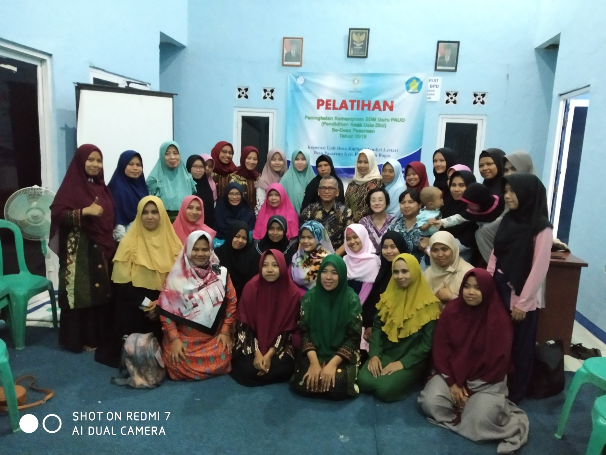

PROGRAM PENDIDIKAN & PELATIHAN
PELATIHAN POSYANDU

PELATIHAN GURU PAUD

"KARTINI MANDIRI LESTARI"
Desa Cerdas Mandiri Lestari adalah desa yang mampu bekerja secara gotong royong, dan modern dengan memanfaatkan sumber daya lokal dan menjaga kelestariannya guna menghapus kemiskinan dan menciptakan kesejahteraan serta kemandirian dengan bersendikan nilai-nilai Pancasila. Desa Pasarean, Kecamatan Pamijahan Kabupaten Bogor merupakan salah satu desa pertama diwilayah Jawa Barat yang mendapatkan perhatian dari Yayasan Damandiri untuk melaksanakan prorgramnya melalui Program Desa Cerdas Mandiri Lestari. Desa Pasarean Jumlah penduduk 11.833 jiwa terdiri dari 3.130 KK namun ada 665 KK tergolong pada Keluarga Pra Sejahtera dan 712 KK termasuk dalam Keluarga Sejahtera.
Koperasi Konsumen KUD Kartini Mandiri Lestari selain melakukan kegiatan usaha juga melakukan kegitan sosial baik yang didanai Yayasan Damandiri maupun dari Infak anggota sebagai bentuk solidaritas sesama dan dilaksanakan setiap tahun
Koperasi Konsumen KUD Kartini Mandiri Lestari selain melakukan kegiatan usaha juga melakukan kegitan Pendidikan dan Pelatiahan yang diprakarsai Yayasan Damandiri
Selain Kegiatan social KUD Kartini Mandiri Lestari juga Melakukan kegiatan Peduli lingkungan dengan bekerjasama dengan Bank Sampah Srikandi Berdikari dan Kampung Ramah Lingkungan Bina Karya yang berlokasi di Kp. Pasarean Rw.01. membantu perbaikan lingkungan berupa pengecatan, penghijauan, perbaikan beberapa rumah warga dll